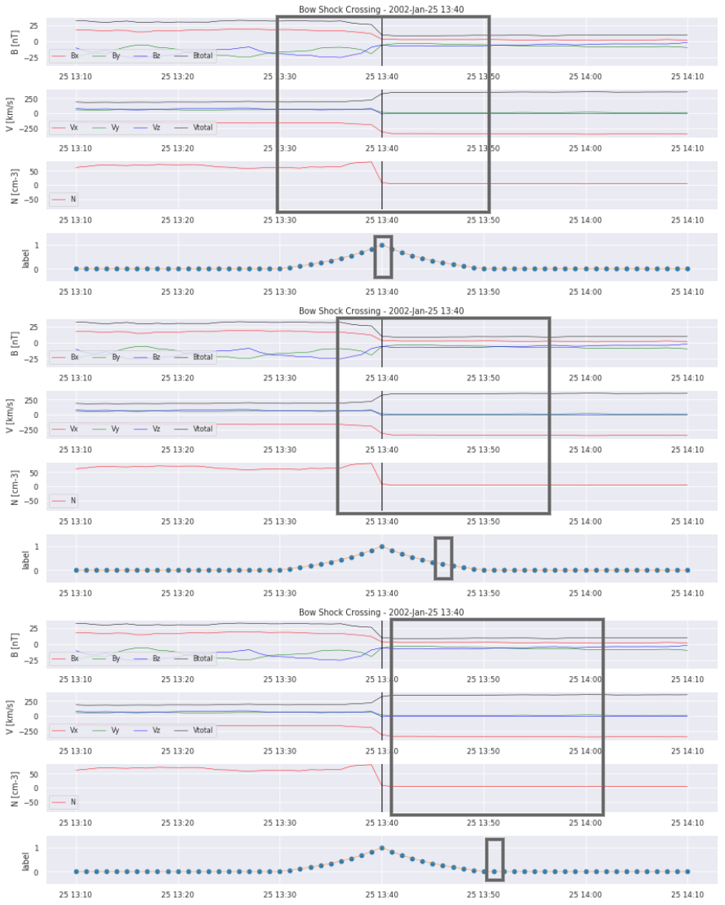

Machine Learning Pipeline for Automatic Detection of Magnetospheric Boundaries
Inhalt
2. Machine Learning Pipeline for Automatic Detection of Magnetospheric Boundaries¶
The work package “Machine Learning Solutions for Data Analysis and Exploitation in Planetary Science” within Europlanet 2024 Research Infrastructure will develop machine learning (ML) powered data analysis and exploitation tools optimized for planetary science.
In this workshop, we will introduce a ML pipeline for the automated detection of magnetospheric boundaries in spacecraft in situ data around Earth. First, we will briefly give an overview about the physical problem. Then, we will guide the participants through the developed ML code with the help of a sample data set and discuss problems encountered during the development of the pipeline.
Europlanet 2024 RI has received funding from the European Union’s Horizon 2020 research and innovation programme under grant agreement No 871149.
2.1. Installation¶
git clone https://github.com/epn-ml/Tutorial_IAP_Boundaries.git
python -m venv wsenv
source wsenv/bin/activate
cd Tutorial_IAP_Boundaries
pip install -r requirements.txt
ipython kernel install --user --name=wsenv
jupyter lab
Download saved model, dataset and labels from https://figshare.com/articles/dataset/Tutorial_IAP_Boundaries_Data/21153403
2.2. Data preparation¶
# at first, we want to import the necessary packages
%load_ext autoreload
%autoreload 2
# Don't print warnings
import warnings
warnings.filterwarnings('ignore')
import sys
import pickle
import numpy as np
import pandas as pds
import datetime
import preprocess as pp
import crossing as cr
import matplotlib.pyplot as plt
# then we load the list of boundary crossings and the dataset
years = [2006,2007,2008]
sc = 'C1'
width = 10
crosslist = cr.get_crosslist('CL_BS_crossings_2002_2014.txt',sc,years)
data = pds.read_csv('data_resampled.csv',index_col=0)
data.index = pds.to_datetime(data.index)
data.head()
---------------------------------------------------------------------------
FileNotFoundError Traceback (most recent call last)
/var/folders/x3/2bzh843n0tv469w6l6sd8sq00000gn/T/ipykernel_3823/2176712100.py in <module>
7 crosslist = cr.get_crosslist('CL_BS_crossings_2002_2014.txt',sc,years)
8
----> 9 data = pds.read_csv('data_resampled.csv',index_col=0)
10 data.index = pds.to_datetime(data.index)
11
~/miniconda3/envs/epn-ml-book/lib/python3.9/site-packages/pandas/util/_decorators.py in wrapper(*args, **kwargs)
309 stacklevel=stacklevel,
310 )
--> 311 return func(*args, **kwargs)
312
313 return wrapper
~/miniconda3/envs/epn-ml-book/lib/python3.9/site-packages/pandas/io/parsers/readers.py in read_csv(filepath_or_buffer, sep, delimiter, header, names, index_col, usecols, squeeze, prefix, mangle_dupe_cols, dtype, engine, converters, true_values, false_values, skipinitialspace, skiprows, skipfooter, nrows, na_values, keep_default_na, na_filter, verbose, skip_blank_lines, parse_dates, infer_datetime_format, keep_date_col, date_parser, dayfirst, cache_dates, iterator, chunksize, compression, thousands, decimal, lineterminator, quotechar, quoting, doublequote, escapechar, comment, encoding, encoding_errors, dialect, error_bad_lines, warn_bad_lines, on_bad_lines, delim_whitespace, low_memory, memory_map, float_precision, storage_options)
678 kwds.update(kwds_defaults)
679
--> 680 return _read(filepath_or_buffer, kwds)
681
682
~/miniconda3/envs/epn-ml-book/lib/python3.9/site-packages/pandas/io/parsers/readers.py in _read(filepath_or_buffer, kwds)
573
574 # Create the parser.
--> 575 parser = TextFileReader(filepath_or_buffer, **kwds)
576
577 if chunksize or iterator:
~/miniconda3/envs/epn-ml-book/lib/python3.9/site-packages/pandas/io/parsers/readers.py in __init__(self, f, engine, **kwds)
931
932 self.handles: IOHandles | None = None
--> 933 self._engine = self._make_engine(f, self.engine)
934
935 def close(self):
~/miniconda3/envs/epn-ml-book/lib/python3.9/site-packages/pandas/io/parsers/readers.py in _make_engine(self, f, engine)
1215 # "Union[str, PathLike[str], ReadCsvBuffer[bytes], ReadCsvBuffer[str]]"
1216 # , "str", "bool", "Any", "Any", "Any", "Any", "Any"
-> 1217 self.handles = get_handle( # type: ignore[call-overload]
1218 f,
1219 mode,
~/miniconda3/envs/epn-ml-book/lib/python3.9/site-packages/pandas/io/common.py in get_handle(path_or_buf, mode, encoding, compression, memory_map, is_text, errors, storage_options)
787 if ioargs.encoding and "b" not in ioargs.mode:
788 # Encoding
--> 789 handle = open(
790 handle,
791 ioargs.mode,
FileNotFoundError: [Errno 2] No such file or directory: 'data_resampled.csv'
There appear quite large differences in magnitude of the various features. Therefore we scale our data!
# scale the data
from sklearn.preprocessing import StandardScaler
scale = StandardScaler()
scale.fit(data)
data_scaled = pds.DataFrame(index = data.index, columns = data.columns, data = scale.transform(data))
data_scaled.head()
| dens | tpar | tperp | vel_gse_x | vel_gse_y | vel_gse_z | v_abs | b_gse_x | b_gse_y | b_gse_z | b_abs | |
|---|---|---|---|---|---|---|---|---|---|---|---|
| 2002-01-01 10:02:00 | -0.027453 | -0.001001 | -0.001 | -0.000979 | -0.001048 | 0.000947 | -0.001037 | 2.626536 | 2.409025 | -1.839272 | 2.098737 |
| 2002-01-01 10:03:00 | -0.027529 | -0.001001 | -0.001 | -0.000976 | -0.001043 | 0.000935 | -0.001040 | 2.617199 | 2.377015 | -1.865195 | 2.089613 |
| 2002-01-01 10:04:00 | -0.027518 | -0.001001 | -0.001 | -0.000976 | -0.001042 | 0.000934 | -0.001039 | 2.606989 | 2.338094 | -1.896799 | 2.079298 |
| 2002-01-01 10:05:00 | -0.027526 | -0.001001 | -0.001 | -0.000975 | -0.001044 | 0.000933 | -0.001040 | 2.601780 | 2.302699 | -1.916597 | 2.068956 |
| 2002-01-01 10:06:00 | -0.027508 | -0.001001 | -0.001 | -0.000977 | -0.001044 | 0.000934 | -0.001039 | 2.596544 | 2.267779 | -1.934071 | 2.058333 |
# we plot examples
for i in range(0,5):
crosslist[i].plot_cross(data, delta=20,label=None,pred=None)
Let’s take a closer look at the data. We can clearly see the boundary crossing in the example plotted. But how will we translate this for our model to learn? Simply segmenting the time series into “crossing” and “no crossing” will give a HUGE data imbalance. So it does not seem to work as a classification problem. We also have to decide on how to deliver the data to a possible model. Single points? Or time frames of multiple hours?
# load label
similarities = pds.read_csv('similarities_C1_width'+str(width)+'.csv', index_col = 0)
similarities.index = pds.to_datetime(similarities.index)
We decided on a parameter between 0 and 1, that simultanously defines if a given time frame contains a bow shock crossing and how far from the center it occurs. The size of the window was chosen to be 20 minutes in order to not contain more than two crossings in one image but still include enough data to perfectly see the crossing.

Nevertheless, the problem of imbalanced data is not yet completely resolved. Let’s see why:
cr.crossingsperyear(crosslist,years)
2006: 46
2007: 141
2008: 138
Given the fact that each crossing now equals 20 non-zero values, we still have a highly imbalanced dataset. So let’s take a look at when our crossings actually happen.
plt.plot(similarities.index[similarities.index.year==2006],similarities[similarities.index.year==2006])
[<matplotlib.lines.Line2D at 0x7fdafcdc7a00>]
2.3. Training, validation, and test sets¶
There are times where the spacecraft does not cross the bow shock for quite a while, for example when it is in the night side part of the magnetopause or too far away in the solar wind. So to simplify the problem, we will only use the times in which we expect crossings to occur. Thus, the next step is to create the training set, validation set and test set.
# randomly split the data into train, test and val
import window as wdw
eventhours = wdw.geteventhours(crosslist,years)
np.random.shuffle(eventhours)
testhours = eventhours[0:42]
valhours = eventhours[43:85]
trainhours = eventhours[85:]
window = width*2
# create windows
x_val_windowed, y_val = wdw.createrandomwindows(data,similarities,window,valhours)
x_train_windowed, y_train = wdw.createrandomwindows(data, similarities,window,trainhours)
windowing done%
windowing done%
2.4. Our model¶
Now that the data preprocessing is done, we can start with building a model. We use a pretty simple architecture to avoid overfitting, which was adapted from automatic detection of interplanetary coronal mass ejections.
from tensorflow.keras.models import Sequential
from tensorflow.keras.layers import Dense, Dropout, Conv1D, MaxPooling1D, Flatten, BatchNormalization
from tensorflow.keras.callbacks import ModelCheckpoint, EarlyStopping, ReduceLROnPlateau, LearningRateScheduler
model_path = 'savedmodel'
#callbacks
callbacks = []
# reduce learning-rate when reaching plateau
callbacks.append(
ReduceLROnPlateau(monitor='val_loss', factor=0.5,
patience=25, epsilon=0.001,
cooldown=1, verbose=1))
# add early stopping
callbacks.append(
EarlyStopping(monitor='val_loss', min_delta=0.001,
patience=50, verbose=1))
callbacks.append(ModelCheckpoint(model_path, verbose=1, save_best_only=True))
2022-09-19 00:32:51.097824: W tensorflow/stream_executor/platform/default/dso_loader.cc:64] Could not load dynamic library 'libcudart.so.11.0'; dlerror: libcudart.so.11.0: cannot open shared object file: No such file or directory
2022-09-19 00:32:51.097845: I tensorflow/stream_executor/cuda/cudart_stub.cc:29] Ignore above cudart dlerror if you do not have a GPU set up on your machine.
WARNING:tensorflow:`epsilon` argument is deprecated and will be removed, use `min_delta` instead.
input_shape = (window, data.shape[1])
from tensorflow.keras.optimizers import Adam
model = Sequential()
model.add(
Conv1D(
20,
kernel_size=3,
padding='causal',
activation='relu',
input_shape=input_shape))
model.add(
Conv1D(
20,
kernel_size=3,
padding='causal',
activation='relu',
input_shape=input_shape))
model.add(
Conv1D(
20,
kernel_size=3,
padding='causal',
activation='relu',
input_shape=input_shape))
model.add(
Conv1D(
20,
kernel_size=3,
padding='causal',
activation='relu',
input_shape=input_shape))
model.add(
Conv1D(
20,
kernel_size=3,
padding='causal',
activation='relu',
input_shape=input_shape))
model.add(
Conv1D(
20,
kernel_size=3,
padding='causal',
activation='relu',
input_shape=input_shape))
model.add(
Conv1D(
20,
kernel_size=3,
padding='causal',
activation='relu',
input_shape=input_shape))
model.add(MaxPooling1D())
model.add(MaxPooling1D())
model.add(Flatten())
model.add(Dropout(0.2))
model.add(Dense(1, activation='sigmoid'))
model.compile(loss='MeanSquaredError', optimizer=Adam(learning_rate=1e-4))
2022-09-19 00:32:51.835450: W tensorflow/stream_executor/platform/default/dso_loader.cc:64] Could not load dynamic library 'libcuda.so.1'; dlerror: libcuda.so.1: cannot open shared object file: No such file or directory
2022-09-19 00:32:51.835471: W tensorflow/stream_executor/cuda/cuda_driver.cc:269] failed call to cuInit: UNKNOWN ERROR (303)
2022-09-19 00:32:51.835486: I tensorflow/stream_executor/cuda/cuda_diagnostics.cc:156] kernel driver does not appear to be running on this host (hannahruedisser-ThinkPad-T14s-Gen-2a): /proc/driver/nvidia/version does not exist
2022-09-19 00:32:51.835662: I tensorflow/core/platform/cpu_feature_guard.cc:142] This TensorFlow binary is optimized with oneAPI Deep Neural Network Library (oneDNN) to use the following CPU instructions in performance-critical operations: AVX2 FMA
To enable them in other operations, rebuild TensorFlow with the appropriate compiler flags.
We can start training, now that the model is built.
model.fit(x_train_windowed,
y_train,
epochs=600,
batch_size=8,
verbose=1,
validation_data=(x_val_windowed, y_val),
callbacks=callbacks,
#sample_weight=weight_train,
shuffle=True)
Epoch 1/600
2022-09-19 00:32:51.946900: I tensorflow/compiler/mlir/mlir_graph_optimization_pass.cc:185] None of the MLIR Optimization Passes are enabled (registered 2)
643/643 [==============================] - 1s 1ms/step - loss: 0.1617 - val_loss: 0.1178
Epoch 00001: val_loss improved from inf to 0.11782, saving model to model
2022-09-19 00:32:53.676703: W tensorflow/python/util/util.cc:348] Sets are not currently considered sequences, but this may change in the future, so consider avoiding using them.
INFO:tensorflow:Assets written to: model/assets
Epoch 2/600
643/643 [==============================] - 1s 1ms/step - loss: 0.1073 - val_loss: 0.1086
Epoch 00002: val_loss improved from 0.11782 to 0.10864, saving model to model
INFO:tensorflow:Assets written to: model/assets
Epoch 3/600
643/643 [==============================] - 1s 1ms/step - loss: 0.1007 - val_loss: 0.1022
Epoch 00003: val_loss improved from 0.10864 to 0.10221, saving model to model
INFO:tensorflow:Assets written to: model/assets
Epoch 4/600
643/643 [==============================] - 1s 1ms/step - loss: 0.0908 - val_loss: 0.0788
Epoch 00004: val_loss improved from 0.10221 to 0.07877, saving model to model
INFO:tensorflow:Assets written to: model/assets
Epoch 5/600
643/643 [==============================] - 1s 1ms/step - loss: 0.0736 - val_loss: 0.0685
Epoch 00005: val_loss improved from 0.07877 to 0.06845, saving model to model
INFO:tensorflow:Assets written to: model/assets
Epoch 6/600
643/643 [==============================] - 1s 1ms/step - loss: 0.0613 - val_loss: 0.0619
Epoch 00006: val_loss improved from 0.06845 to 0.06190, saving model to model
INFO:tensorflow:Assets written to: model/assets
Epoch 7/600
643/643 [==============================] - 1s 1ms/step - loss: 0.0540 - val_loss: 0.0651
Epoch 00007: val_loss did not improve from 0.06190
Epoch 8/600
643/643 [==============================] - 1s 1ms/step - loss: 0.0468 - val_loss: 0.0592
Epoch 00008: val_loss improved from 0.06190 to 0.05919, saving model to model
INFO:tensorflow:Assets written to: model/assets
Epoch 9/600
643/643 [==============================] - 1s 1ms/step - loss: 0.0444 - val_loss: 0.0571
Epoch 00009: val_loss improved from 0.05919 to 0.05712, saving model to model
INFO:tensorflow:Assets written to: model/assets
Epoch 10/600
643/643 [==============================] - 1s 1ms/step - loss: 0.0423 - val_loss: 0.0567
Epoch 00010: val_loss improved from 0.05712 to 0.05675, saving model to model
INFO:tensorflow:Assets written to: model/assets
Epoch 11/600
643/643 [==============================] - 1s 1ms/step - loss: 0.0389 - val_loss: 0.0551
Epoch 00011: val_loss improved from 0.05675 to 0.05513, saving model to model
INFO:tensorflow:Assets written to: model/assets
Epoch 12/600
643/643 [==============================] - 1s 1ms/step - loss: 0.0374 - val_loss: 0.0563
Epoch 00012: val_loss did not improve from 0.05513
Epoch 13/600
643/643 [==============================] - 1s 1ms/step - loss: 0.0350 - val_loss: 0.0527
Epoch 00013: val_loss improved from 0.05513 to 0.05267, saving model to model
INFO:tensorflow:Assets written to: model/assets
Epoch 14/600
643/643 [==============================] - 1s 1ms/step - loss: 0.0341 - val_loss: 0.0519
Epoch 00014: val_loss improved from 0.05267 to 0.05187, saving model to model
INFO:tensorflow:Assets written to: model/assets
Epoch 15/600
643/643 [==============================] - 1s 1ms/step - loss: 0.0326 - val_loss: 0.0515
Epoch 00015: val_loss improved from 0.05187 to 0.05151, saving model to model
INFO:tensorflow:Assets written to: model/assets
Epoch 16/600
643/643 [==============================] - 1s 1ms/step - loss: 0.0309 - val_loss: 0.0496
Epoch 00016: val_loss improved from 0.05151 to 0.04957, saving model to model
INFO:tensorflow:Assets written to: model/assets
Epoch 17/600
643/643 [==============================] - 1s 1ms/step - loss: 0.0292 - val_loss: 0.0507
Epoch 00017: val_loss did not improve from 0.04957
Epoch 18/600
643/643 [==============================] - 1s 1ms/step - loss: 0.0275 - val_loss: 0.0488
Epoch 00018: val_loss improved from 0.04957 to 0.04877, saving model to model
INFO:tensorflow:Assets written to: model/assets
Epoch 19/600
643/643 [==============================] - 1s 1ms/step - loss: 0.0279 - val_loss: 0.0487
Epoch 00019: val_loss improved from 0.04877 to 0.04874, saving model to model
INFO:tensorflow:Assets written to: model/assets
Epoch 20/600
643/643 [==============================] - 1s 1ms/step - loss: 0.0248 - val_loss: 0.0471
Epoch 00020: val_loss improved from 0.04874 to 0.04714, saving model to model
INFO:tensorflow:Assets written to: model/assets
Epoch 21/600
643/643 [==============================] - 1s 1ms/step - loss: 0.0253 - val_loss: 0.0482
Epoch 00021: val_loss did not improve from 0.04714
Epoch 22/600
643/643 [==============================] - 1s 1ms/step - loss: 0.0240 - val_loss: 0.0495
Epoch 00022: val_loss did not improve from 0.04714
Epoch 23/600
643/643 [==============================] - 1s 1ms/step - loss: 0.0229 - val_loss: 0.0497
Epoch 00023: val_loss did not improve from 0.04714
Epoch 24/600
643/643 [==============================] - 1s 1ms/step - loss: 0.0230 - val_loss: 0.0504
Epoch 00024: val_loss did not improve from 0.04714
Epoch 25/600
643/643 [==============================] - 1s 1ms/step - loss: 0.0222 - val_loss: 0.0561
Epoch 00025: val_loss did not improve from 0.04714
Epoch 26/600
643/643 [==============================] - 1s 1ms/step - loss: 0.0220 - val_loss: 0.0474
Epoch 00026: val_loss did not improve from 0.04714
Epoch 27/600
643/643 [==============================] - 1s 1ms/step - loss: 0.0212 - val_loss: 0.0474
Epoch 00027: val_loss did not improve from 0.04714
Epoch 28/600
643/643 [==============================] - 1s 1ms/step - loss: 0.0198 - val_loss: 0.0488
Epoch 00028: val_loss did not improve from 0.04714
Epoch 29/600
643/643 [==============================] - 1s 1ms/step - loss: 0.0197 - val_loss: 0.0511
Epoch 00029: val_loss did not improve from 0.04714
Epoch 30/600
643/643 [==============================] - 1s 1ms/step - loss: 0.0184 - val_loss: 0.0508
Epoch 00030: val_loss did not improve from 0.04714
Epoch 31/600
643/643 [==============================] - 1s 1ms/step - loss: 0.0186 - val_loss: 0.0483
Epoch 00031: val_loss did not improve from 0.04714
Epoch 32/600
643/643 [==============================] - 1s 1ms/step - loss: 0.0182 - val_loss: 0.0476
Epoch 00032: val_loss did not improve from 0.04714
Epoch 33/600
643/643 [==============================] - 1s 1ms/step - loss: 0.0173 - val_loss: 0.0480
Epoch 00033: val_loss did not improve from 0.04714
Epoch 34/600
643/643 [==============================] - 1s 1ms/step - loss: 0.0173 - val_loss: 0.0534
Epoch 00034: val_loss did not improve from 0.04714
Epoch 35/600
643/643 [==============================] - 1s 1ms/step - loss: 0.0163 - val_loss: 0.0517
Epoch 00035: val_loss did not improve from 0.04714
Epoch 36/600
643/643 [==============================] - 1s 1ms/step - loss: 0.0170 - val_loss: 0.0493
Epoch 00036: val_loss did not improve from 0.04714
Epoch 37/600
643/643 [==============================] - 1s 1ms/step - loss: 0.0154 - val_loss: 0.0517
Epoch 00037: val_loss did not improve from 0.04714
Epoch 38/600
643/643 [==============================] - 1s 1ms/step - loss: 0.0151 - val_loss: 0.0512
Epoch 00038: val_loss did not improve from 0.04714
Epoch 39/600
643/643 [==============================] - 1s 1ms/step - loss: 0.0145 - val_loss: 0.0546
Epoch 00039: val_loss did not improve from 0.04714
Epoch 40/600
643/643 [==============================] - 1s 1ms/step - loss: 0.0150 - val_loss: 0.0505
Epoch 00040: val_loss did not improve from 0.04714
Epoch 41/600
643/643 [==============================] - 1s 1ms/step - loss: 0.0147 - val_loss: 0.0477
Epoch 00041: val_loss did not improve from 0.04714
Epoch 42/600
643/643 [==============================] - 1s 1ms/step - loss: 0.0144 - val_loss: 0.0492
Epoch 00042: val_loss did not improve from 0.04714
Epoch 43/600
643/643 [==============================] - 1s 1ms/step - loss: 0.0139 - val_loss: 0.0483
Epoch 00043: val_loss did not improve from 0.04714
Epoch 44/600
643/643 [==============================] - 1s 1ms/step - loss: 0.0134 - val_loss: 0.0528
Epoch 00044: val_loss did not improve from 0.04714
Epoch 45/600
643/643 [==============================] - 1s 1ms/step - loss: 0.0136 - val_loss: 0.0503
Epoch 00045: ReduceLROnPlateau reducing learning rate to 4.999999873689376e-05.
Epoch 00045: val_loss did not improve from 0.04714
Epoch 46/600
643/643 [==============================] - 1s 1ms/step - loss: 0.0120 - val_loss: 0.0507
Epoch 00046: val_loss did not improve from 0.04714
Epoch 47/600
643/643 [==============================] - 1s 1ms/step - loss: 0.0116 - val_loss: 0.0488
Epoch 00047: val_loss did not improve from 0.04714
Epoch 48/600
643/643 [==============================] - 1s 1ms/step - loss: 0.0119 - val_loss: 0.0504
Epoch 00048: val_loss did not improve from 0.04714
Epoch 49/600
643/643 [==============================] - 1s 1ms/step - loss: 0.0115 - val_loss: 0.0506
Epoch 00049: val_loss did not improve from 0.04714
Epoch 50/600
643/643 [==============================] - 1s 1ms/step - loss: 0.0114 - val_loss: 0.0496
Epoch 00050: val_loss did not improve from 0.04714
Epoch 51/600
643/643 [==============================] - 1s 1ms/step - loss: 0.0115 - val_loss: 0.0516
Epoch 00051: val_loss did not improve from 0.04714
Epoch 52/600
643/643 [==============================] - 1s 1ms/step - loss: 0.0112 - val_loss: 0.0496
Epoch 00052: val_loss did not improve from 0.04714
Epoch 53/600
643/643 [==============================] - 1s 1ms/step - loss: 0.0113 - val_loss: 0.0506
Epoch 00053: val_loss did not improve from 0.04714
Epoch 54/600
643/643 [==============================] - 1s 1ms/step - loss: 0.0110 - val_loss: 0.0524
Epoch 00054: val_loss did not improve from 0.04714
Epoch 55/600
643/643 [==============================] - 1s 1ms/step - loss: 0.0109 - val_loss: 0.0514
Epoch 00055: val_loss did not improve from 0.04714
Epoch 56/600
643/643 [==============================] - 1s 1ms/step - loss: 0.0108 - val_loss: 0.0521
Epoch 00056: val_loss did not improve from 0.04714
Epoch 57/600
643/643 [==============================] - 1s 1ms/step - loss: 0.0108 - val_loss: 0.0520
Epoch 00057: val_loss did not improve from 0.04714
Epoch 58/600
643/643 [==============================] - 1s 1ms/step - loss: 0.0114 - val_loss: 0.0528
Epoch 00058: val_loss did not improve from 0.04714
Epoch 59/600
643/643 [==============================] - 1s 1ms/step - loss: 0.0109 - val_loss: 0.0527
Epoch 00059: val_loss did not improve from 0.04714
Epoch 60/600
643/643 [==============================] - 1s 1ms/step - loss: 0.0102 - val_loss: 0.0514
Epoch 00060: val_loss did not improve from 0.04714
Epoch 61/600
643/643 [==============================] - 1s 1ms/step - loss: 0.0107 - val_loss: 0.0503
Epoch 00061: val_loss did not improve from 0.04714
Epoch 62/600
643/643 [==============================] - 1s 1ms/step - loss: 0.0103 - val_loss: 0.0519
Epoch 00062: val_loss did not improve from 0.04714
Epoch 63/600
643/643 [==============================] - 1s 1ms/step - loss: 0.0100 - val_loss: 0.0517
Epoch 00063: val_loss did not improve from 0.04714
Epoch 64/600
643/643 [==============================] - 1s 1ms/step - loss: 0.0102 - val_loss: 0.0514
Epoch 00064: val_loss did not improve from 0.04714
Epoch 65/600
643/643 [==============================] - 1s 1ms/step - loss: 0.0097 - val_loss: 0.0528
Epoch 00065: val_loss did not improve from 0.04714
Epoch 66/600
643/643 [==============================] - 1s 1ms/step - loss: 0.0100 - val_loss: 0.0518
Epoch 00066: val_loss did not improve from 0.04714
Epoch 67/600
643/643 [==============================] - 1s 1ms/step - loss: 0.0100 - val_loss: 0.0535
Epoch 00067: val_loss did not improve from 0.04714
Epoch 68/600
643/643 [==============================] - 1s 1ms/step - loss: 0.0097 - val_loss: 0.0516
Epoch 00068: val_loss did not improve from 0.04714
Epoch 69/600
643/643 [==============================] - 1s 1ms/step - loss: 0.0103 - val_loss: 0.0519
Epoch 00069: val_loss did not improve from 0.04714
Epoch 70/600
643/643 [==============================] - 1s 1ms/step - loss: 0.0097 - val_loss: 0.0523
Epoch 00070: ReduceLROnPlateau reducing learning rate to 2.499999936844688e-05.
Epoch 00070: val_loss did not improve from 0.04714
Epoch 00070: early stopping
<keras.callbacks.History at 0x7fdaa8456550>
We can also just load the best model trained so far and test it on some unseen data.
from tensorflow.keras.models import load_model
model = load_model('model')
x_test_windowed, test_df = wdw.createrandomtest(data, similarities,window,testhours)
y_pred = model.predict(x_test_windowed, verbose=1)
y_predSeries = pds.DataFrame(index=test_df.index,data=np.ravel(y_pred))
y_predSeries['pred']=np.ravel(y_pred)
testlist = [i for i in crosslist if datetime.datetime(i.crosstime.year,i.crosstime.month,i.crosstime.day,i.crosstime.hour) in testhours]
windowing done%
54/54 [==============================] - 0s 758us/step
for i in testhours[0:10]:
cr.plot_results(data,similarities,y_predSeries,i)
We can already see that there are some bumps where a crossing takes place, but we also missed some! We start with some postprocessing to turn the prediction into a comparable catalog.
import scipy.signal as ss
import postprocess
peaks = ss.find_peaks(y_predSeries['pred'].values,prominence=0.2)
predlist = []
for i in peaks[0]:
predlist.append(cr.Crossing(y_predSeries.index[i]))
TP, FN, FP = postprocess.evaluate(predlist,testlist, thres=3)
Precision is: 0.5423728813559322
Recall is: 0.5161290322580645
True Positives 32
False Negatives 30
False Positives 27
We did manage to find some of the crossings, but there still is a lot of work to do:
increase data
use non-resampled dataset
use additional features
tune hyperparameters
further experiment with model architecture
crossvalidation